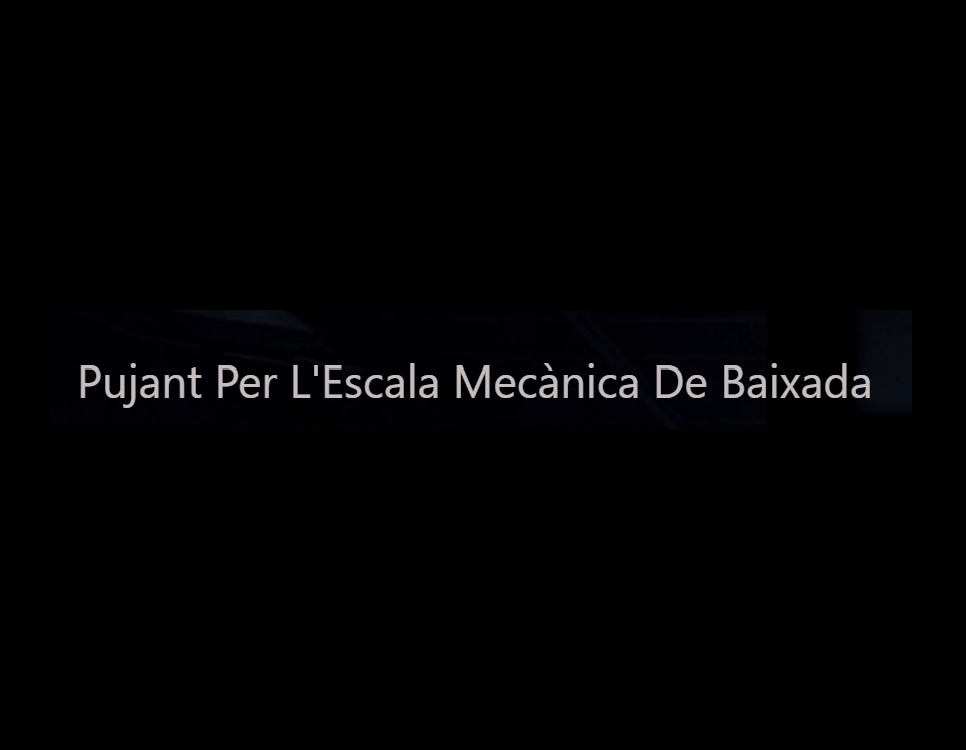
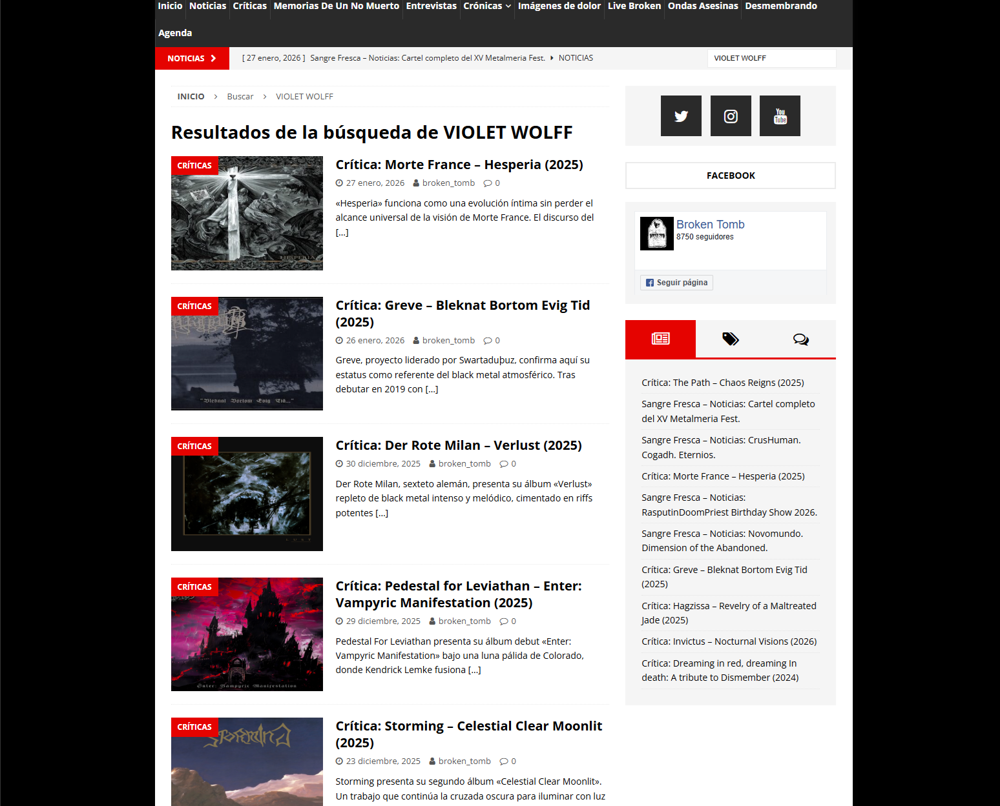

-
Calculadora
Calculadora responsive desarrollada desde cero en React con enfoque en lógica, estado y experiencia de usuario. Interfaz limpia y accesible (WCAG), manejo de operaciones complejas, control de errores y diseño con micro-interacciones. Código modular, reutilizable y optimizado para rendimiento.
Stack: React, JavaScript (ES6+), HTML5, CSS3, Hooks (useState), Visual Studio Code, Git/GitHub
https://github.com/AraSancor/calculadora-reactCalculadora React
...
-
Mini juego Adivina
Juego web interactivo desarrollado en React que desafía al usuario a adivinar un número aleatorio. Enfocado en lógica de juego, manejo de estado, validación de inputs y feedback instantáneo al usuario. Interfaz lúdica, 100% responsive, accesible (WCAG) y con micro-interacciones para mejorar la experiencia.
Stack: React, JavaScript (ES6+), HTML5, CSS3, Hooks (useState, useEffect), Visual Studio Code, Git/GitHub
https://github.com/AraSancor/calculadora-reactJuego Adivina
-
Textil
Funciones:
Frontend Developer en Tejidos Girona. Personalicé módulos y temas responsive en PrestaShop (Smarty, PHP, JS). Automaticé la carga de catálogo con Excel/PHP (-60% tiempo) y sincronización con ERP. Optimicé SEO on-page, Core Web Vitals y gestioné Google Ads. Diseñé en Figma y generé contenido con IA Generativa.
SEO, Frontend Web Developer, Gestor de contenido.
Empresa: Textil
-
AENTEG
Funciones:
Frontend Developer WordPress. Diseñé y desarrollé webs responsive con PHP y CSS3, optimizadas para WCAG y Core Web Vitals. Gestión integral de plugins (SEO, seguridad, caché, analytics) con integración a código personalizado y prácticas de staging y lazy loading.
https://www.premisetech.com/Frontend Web Developer, Gestor de contenido.
Empresa: AENTEG.
-
Music Go Bang
Funciones:
Responsable del diseño, desarrollo código cero y mantenimiento del sitio web, enfocado en la accesibilidad y UX. Uso de las tecnologías HTML5, CSS3, JavaScript, Bootstrap, Ajax y GitHub para el diseño y control de tipografías, plantillas y elementos visuales, implementación de interactividad mediante JavaScript. Colaboración con GitHub. Uso de herramientas de IA para automatizar pruebas de accesibilidad, generar contenido alternativo y optimizar experiencias de usuario mediante análisis de datos de interacción (A/B testing, métricas de UX).
Link MusicGoBangFrontend Web Developer, Gestor de contenido.
-

Pujant Per L'Escala Mecànica De Baixada
Funciones:
Responsable del diseño, desarrollo código cero y mantenimiento del sitio web, enfocado en la accesibilidad y UX. Uso de las tecnologías HTML5, CSS3, JavaScript, Bootstrap, Ajax y GitHub para el diseño y control de tipografías, plantillas y elementos visuales, implementación de interactividad mediante JavaScript. Colaboración con GitHub. Uso de herramientas de IA para automatizar pruebas de accesibilidad, generar contenido alternativo y optimizar experiencias de usuario mediante análisis de datos de interacción (A/B testing, métricas de UX).
Link PujantPerL'Escala MecànicaDeBaixadaFrontend Web Developer, Gestor de contenido.
Empresa: Radio Salt.
-

BROKEN TOMB
Funciones:
Redactora y crítica musical especializada en rock, con capacidad para captar la energía musical y traducirla en reseñas claras, dinámicas y fieles a la experiencia del oyente
https://www.brokentombmagazine.com/REDACTORA.
Empresa: BROCKEN TOMB.
-
Responsable del diseño, desarrollo código cero y mantenimiento de diversos sitios web, enfocado en la accesibilidad y UX. Uso de las tecnologías HTML5, CSS3, JavaScript, Bootstrap, Ajax, React y GitHub para el diseño y control de tipografías, plantillas y elementos visuales, implementación de interactividad mediante JavaScript y React; gestión de versiones y colaboración con GitHub. Uso de herramientas de IA para automatizar pruebas de accesibilidad, generar contenido alternativo y optimizar experiencias de usuario mediante análisis de datos de interacción (A/B testing, métricas de UX).
LinkCURRÍCULUM